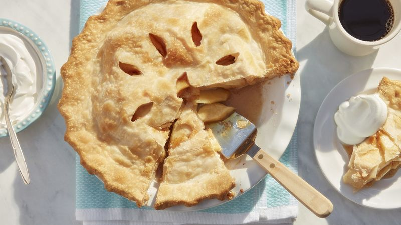

Apple Pie

Description
The perfect apple pie recipe.
Ingredients
Crust
- 1 box refrigerated Pillbury Pie Crusts (2 count), softened as directed by box
Filling
- 6 medium honey crisp apples peeled and thinly sliced
- 3/4 cup sugar
- 2 tbsp all-purpose flour
- 3/4 tsp ground cinnamon
- 1/4 tsp salt
- 1/8 tsp ground nutmeg
- 1 tbsp lemon juice
Steps
- Heat oven to 425F. Place 1 pie crust in ungreased 9 inch glass pie plate. Press firmly against side and bottom
- In large bowl, gently mix filling ingredients: spoon into crust lined pie plate.
- Top with second crust. Wrap excess top crust under bottom crust edge, pressing edges together to seal; flute. Cut slits or shapes in several places in top crust
- Bake 40 to 45 minutes or until apples are tender and crust is golden brown. Cover edge of crust with 2 to 3 inch wide strips of foil after first 15 to 20 minutes of baking to prevent excessive browning
- Cool on cooling rack at least 2 hours before serving.